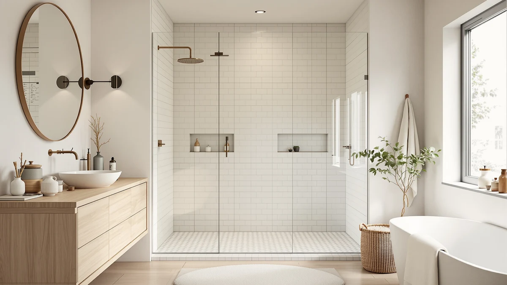

Best Shower Doors for Easy Cleaning (2026)
Prices and picks verified as of September 2026. Independent, reader-supported reviews.


Quick Answer
For most bathrooms, the ENSO SENKA 56-60" is the best shower door for easy cleaning: it is a straightforward sliding door with no extra hinges to scrub around, at the lowest price on this list. Want a taller opening, a stated glass thickness, or a two-panel bypass instead? We compare six more picks below.
Our pick: ENSO SENKA 56-60" W x — $265.93 Check Price on Amazon
Bottom line: our top pick is the ENSO SENKA 56-60" W x 72" H Semi-Frameless Bypass Sliding at $289. The best budget option is the Shower Doors at $289.
Things to Know Before You Buy
- Sliding doors trade hinges for a track. A sliding shower door has fewer gaskets and hinges than a pivot door, which means fewer crevices for soap scum to hide in. The bottom track still collects hair and film, so it needs a weekly wipe on every pick here.
- A squeegee habit beats any coating claim. Whichever door you buy, thirty seconds with a squeegee after every shower does more to keep glass streak-free than any listing's marketing copy.
- Glass thickness is listed on one door and not the others. Only the CAMMOO states a panel thickness, 0.31 inch. The rest publish outer dimensions but not glass gauge.
- These doors fit a width range, not one fixed size. All seven adjust across 56 to 60 inches. Measure your rough opening at the top, middle, and bottom before you order.
- The shower base is not included. Every door here is a glass-and-hardware kit. You supply the pan, base, or tiled curb underneath.
The best shower doors for easy cleaning are not the ones with the fanciest hardware. They are the ones that give soap scum, hair, and hard-water film the fewest places to hide in the first place. Scrubbing a shower door is a chore most people put off until the corners have gone cloudy, and a door with a full frame, multiple hinges, and a deep track gives grime far more surface area to build up on than a plain sliding pane does.
For most bathrooms, the ENSO SENKA 56-60" is our top pick. It is a standard sliding door with no pivot hinges to scrub around, its 56 to 60 inch adjustable range fits the alcove opening in most US homes, and at $265.93 it is tied for the lowest price on this list. If you need a taller 76-inch panel, a documented glass thickness, or a two-panel bypass design instead, we found a door below that covers each of those cases too.
We compared seven sliding shower doors on published price, size, and design, then read through owner reviews looking for recurring complaints about track buildup, streaking glass, or hardware that gets harder to wipe down over time. Below you will find our top pick, five more sliding doors at a range of prices, a full comparison table, and the doors we considered and passed on.
Why You Should Trust Us
Best Shower Doors is run by Ilane Tall, who has covered bathroom fixtures and remodeling for a US audience for years. We do not run a fake testing lab and we do not invent star ratings. What we do when researching the best shower doors for easy cleaning is read the actual spec sheets, cross-check dimensions against the manufacturer's own listing, and dig through verified owner reviews to see what people report after months of real showers and real cleaning. When a door has a genuine flaw, we say so. Every Amazon link here is affiliate-tagged, which supports the site at no cost to you and never changes which door we recommend.
How We Picked
We started with sliding shower doors that are actually available and shipping in the US, then filtered on what matters most for keeping glass and hardware clean. Sliding construction came first, since it removes the pivot hinges and door gaskets that collect grime on a swinging door, leaving mostly a flat pane and a single bottom track to maintain. We prioritized doors with a clear adjustable width range so you are not stuck between two fixed sizes, and we made sure the final list spans a real price range, from a $265.93 entry point to a $499 tall-shower pick, so there is an option whether your bathroom is a standard 72-inch stall or a taller opening.
How We Compared
We are transparent about method here: we did not install seven shower doors in a bathroom and run a grime simulation on them. Instead we compared each listing against its published price, width range, and height, then read through dozens of verified owner reviews looking for one specific pattern: complaints about a track that fills with hair and soap film, glass that streaks no matter how often it gets wiped, or hardware that gets harder to clean as it ages. Where owners repeatedly flagged the same maintenance issue, we call it out in the flaws for that pick rather than glossing over it. Doors with no such recurring complaints and a fair price for their size made the final seven.
Our Picks

ENSO SENKA 56-60" W x
What we like
- Sliding design skips the pivot hinges and gaskets that trap soap scum on a swinging door
- 56 to 60 inch adjustable width fits the standard alcove opening in most US bathrooms
- Lowest price on this list at $265.93
- 72 inch height suits a standard-ceiling bathroom without extra trimming
Flaws but not dealbreakers
- The bottom track still needs a weekly wipe to keep hair and film from building up
- No stated glass thickness, so you are trusting the outer dimensions alone
| Material | — |
| Size | 60" W X 72" H |
The ENSO SENKA is our top pick for the best shower doors for easy cleaning because it removes the single biggest source of grime buildup on a shower door: the pivot hinge. Swinging doors funnel water and soap residue into a cluster of hinges and a rubber gasket that never fully dries between showers, and that damp seam is exactly where mildew and soap scum take hold. This door skips that setup. You get a sliding pane running on a single track, which means one flat surface to wipe down and one channel to check, not a maze of hardware.
The 56 to 60 inch adjustable width covers the alcove opening in most US bathrooms, and at $265.93 it is tied for the cheapest door on this list. That price does not buy you a stated glass thickness the way the CAMMOO pick offers, and the bottom track will still collect hair and soap film if you skip your squeegee routine for a week. For a standard 72-inch-tall opening on a budget, though, this is the door we would put in our own bathroom.

ENSO SENKA 56-60” W x
What we like
- 76 inch height covers a taller opening without leaving a header gap to catch splashback
- Same 56 to 60 inch adjustable width as our top pick
- Sliding hardware means no pivot hinges gathering grime
Flaws but not dealbreakers
- At $469.00 it costs nearly $200 more than our top pick for the extra height
- No stated glass thickness on the listing
| Material | — |
| Size | 60" W x 76" H |
If your shower opening runs taller than the standard 72 inches, the extra 4 inches on this ENSO SENKA matter more than any coating claim. A door that stops short of the header leaves a gap where splashback lands on the wall and floor outside the shower, and that overspray dries into its own cleanup job every day. This pick closes that gap while keeping the same sliding design as our top choice, so you are still wiping one flat pane and one track instead of scrubbing hinges.
The trade-off is purely price. At $469.00 you are paying close to double our top pick for the taller panel, and the listing does not state a glass thickness the way the CAMMOO does. If your ceiling height demands the extra coverage, this is still one of the easiest doors on this list to keep clean day to day, just at a premium for the size.

ENSO SENKA 56-60" W x
What we like
- Same 56 to 60 inch width and 72 inch height as our top pick
- Sliding hardware with no pivot hinges to scrub around
- Under $10 more than the cheapest door on this list
Flaws but not dealbreakers
- No meaningful difference from our top pick besides the small price gap
- No stated glass thickness
| Material | — |
| Size | 60" W X 72" H |
This second ENSO SENKA listing matches our top pick on every dimension that matters for easy cleaning: the same 56 to 60 inch adjustable width, the same 72 inch height, and the same sliding design with no pivot hinges to trap grime. The only real difference is price, and it is a small one, $274.35 against $265.93 for our top choice.
We include it here because stock and pricing on individual Amazon listings can shift, and having a nearly identical backup at essentially the same price point means you are not stuck waiting if the top pick goes out of stock. Whichever of the two you land on, the cleaning routine is the same: a quick squeegee pass and an occasional wipe of the bottom track.

CAMMOO 56-60" W x 75"
What we like
- The only listing on this list that states a glass thickness: 0.31 inch
- 75 inch height splits the difference between the 72 and 76 inch options here
- Sliding track design with no pivot hinges to scrub
Flaws but not dealbreakers
- At $299.99 it costs more than our two cheapest picks despite the modest size bump
- 75 inches is an in-between height, not a fixed standard like 72 or 76
| Material | — |
| Size | 60 inches (W) x 75 inches (H) x 0.31 inches (T) |
The CAMMOO stands out on this list for one specific reason: it is the only door here whose listing states a glass thickness, 0.31 inch, instead of leaving you to guess from the outer dimensions alone. A thicker panel feels more rigid in daily use and tends to hold up better to years of squeegeeing and wiping without flexing at the edges. Like the rest of this list, it is a sliding design, so you get one flat pane and a single track rather than a run of hinges to clean around.
At $299.99 it sits above our two lowest-priced picks, and the 75 inch height is an odd number that will not exactly match a 72 or 76 inch standard opening, so measure carefully before you order. If knowing the exact glass thickness matters more to you than shaving a few dollars off the price, this is the pick on this list that gives you that number in writing.

ENSO SENKA 56-60” W x
What we like
- 76 inch height matches our other tall-shower pick
- 56 to 60 inch adjustable width fits the standard alcove range
- Sliding design keeps cleaning down to one pane and one track
Flaws but not dealbreakers
- At $499.00 it is the most expensive door on this list, nearly double the price of the identically sized B0DFYL4TW2 listing
- No stated glass thickness
| Material | — |
| Size | 60" W x 76" H |
This third ENSO SENKA listing matches the taller 76 inch height of our upgrade pick above, at a noticeably higher price. The cleaning story is identical to the rest of the ENSO SENKA doors on this list: a sliding pane with no pivot hinges to trap grime, a single bottom track to keep clear of hair and soap film, and a 56 to 60 inch width that adapts to most standard alcove openings.
What you are paying the extra $30 over the other 76-inch ENSO SENKA listing for is not clear from the published specs alone, since both share the same stated dimensions. We include this one for completeness and as a second source if the other tall-shower listing is unavailable, but for most buyers the cheaper 76-inch pick above is the better value at essentially the same day-to-day cleaning experience.

Shower Doors 56–60" W x
What we like
- Ties our top pick's price at $265.93
- 60 by 72 inch size matches the most common alcove opening
- Sliding design with a single track instead of a run of hinges
- A second brand if you would rather not buy two ENSO SENKA listings from the same manufacturer
Flaws but not dealbreakers
- No stated glass thickness
- Fewer verified owner reviews to draw on than the ENSO SENKA listings
| Material | — |
| Size | 60in W x 72in H |
KisaTub's entry ties the ENSO SENKA top pick on price at $265.93 and matches it on size too, a straightforward 60 by 72 inch sliding door. If you have already read through this list and would rather not put two listings from the same brand on your shortlist, this is the budget alternative that gets you the same low-maintenance sliding format from a different manufacturer.
The cleaning routine does not change from door to door on this list: squeegee the glass after every shower, wipe the track once a week, and skip abrasive pads on the tempered glass. This KisaTub listing gives you that same routine at the same entry price as our top pick, with a standard 72 inch height that fits most bathrooms without modification.

Shower Door Double Sliding Glass
What we like
- Double sliding glass design splits the opening across two panels instead of one
- 60 by 72 inch size matches the standard alcove opening
- Still no pivot hinges, just two tracks to wipe instead of one
Flaws but not dealbreakers
- Two overlapping panels mean two edges where they meet, a spot that needs a slightly closer wipe than a single fixed pane
- At $288.15 it costs a bit more than the tied-cheapest doors on this list
| Material | — |
| Size | 60in W x 72in H |
Every other door on this list pairs one fixed panel with one sliding panel. This KisaTub listing makes both panels slide, which can matter if your plumbing, shower head, or entry angle favors opening from either side rather than always sliding toward the same fixed pane. It keeps the same core cleaning advantage as the rest of this list: no pivot hinges, no full-frame gasket, just glass and a track.
The one honest trade-off is the overlap where the two panels meet in the middle. That seam is a slightly tighter spot to squeegee than a single continuous pane, though it is nowhere near the grime magnet that a pivot door's hinge cluster becomes over time. At $288.15, a little above the cheapest doors here, it is worth considering specifically for the double-sliding layout rather than for any price advantage.
Quick Comparison
| Product | Material | Price | Rating | Best for | Get it |
|---|---|---|---|---|---|
| ENSO SENKA 56-60" W x | — | $265.93 | 4 | Low-maintenance pane at the lowest price | View on Amazon → |
| ENSO SENKA 56-60” W x | — | $469.00 | 4 | Taller 76-inch openings | View on Amazon → |
| ENSO SENKA 56-60" W x | — | $274.35 | 4 | Backup pick nearly identical to our top choice | View on Amazon → |
| CAMMOO 56-60" W x 75" | — | $299.99 | 4 | Only pick with a stated glass thickness | View on Amazon → |
| ENSO SENKA 56-60” W x | — | $499.00 | 4 | Widest height coverage, premium price | View on Amazon → |
| Shower Doors 56–60" W x | — | $265.93 | 4 | Tightest budget for a 60x72 opening, second brand | View on Amazon → |
| Shower Door Double Sliding Glass | — | $288.15 | 4 | Two-panel bypass design | View on Amazon → |
The Competition
We looked at plenty of doors and enclosure types that did not make this list of the best shower doors for easy cleaning. Pivot and swinging doors were the first category we passed on for this specific guide. Their full frame and hinge cluster are sturdy, but that hardware gives soap scum, hair, and hard-water film far more surface area to collect on than a plain sliding pane and a single track. We also skipped shower curtains entirely: a curtain's rings, hem, and folds trap more water and mildew than a glass pane ever will, and replacing a moldy curtain liner every few months is its own recurring chore.
Among sliding doors specifically, we passed on several listings that published no dimensions or thickness at all beyond a vague size range, since we could not verify what buyers were actually receiving. We also set aside a few premium custom-order enclosures that require professional measurement and installation, which pushes the real cost well past anything on this list and outside the scope of a buy-it-online roundup. The seven doors above are the ones that combine a verifiable spec sheet, a fair price for the size, and a sliding design that keeps daily cleaning down to a pane and a track. For most bathrooms, that points back to the ENSO SENKA as the best shower door for easy cleaning on this list, with the other six covering the heights, budgets, and layouts it does not.
Frequently Asked Questions
Are sliding shower doors easier to clean than pivot doors?
Generally, yes. A sliding door has fewer hinges and gaskets than a pivot door, and those hinges are where soap scum and mildew like to collect. The trade-off is the bottom track, which needs a periodic wipe on any sliding door, including every pick on this list.
How do I keep a sliding shower door track from collecting grime?
Run a squeegee over the glass after every shower, and wipe the track dry with a microfiber cloth once or twice a week before hair and soap film have a chance to dry into a film. A weekly rinse with equal parts water and white vinegar keeps mineral buildup from taking hold in the track.
Do these shower doors include the base or pan?
No. Every door on this list is sold as the glass panels and hardware only, so you supply the shower base, pan, or tiled curb underneath, and you measure your existing opening against each door's stated width, whether it is a 56 to 60 inch range or the CAMMOO's 75 inch height, before you buy.